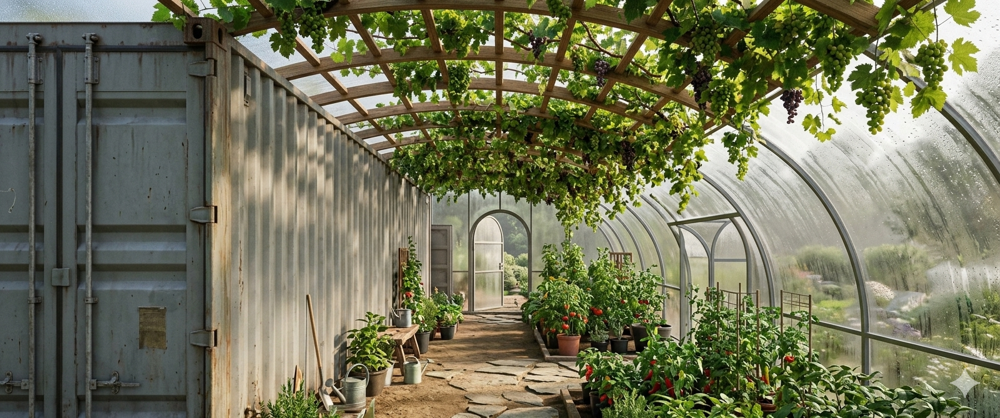

Springhouse Project
Build Log Solar & Power Greenhouse Field Notes About
Off-grid build log
Springhouse is a real-world off-grid build log for solar power, greenhouse construction, rural infrastructure, and practical resilience.

This site is the home for the Springhouse build log: a practical record of the physical work, field lessons, and off-grid systems being built one step at a time.
Springhouse is not a polished lifestyle blog or a clean-room product demo. It is a working rural build: solar panels, batteries, greenhouse framing, site work, animal systems, field repairs, weather problems, power experiments, and the practical decisions that come from building outside instead of just planning at a desk.
The focus here is the physical side of the project. That means solar power, greenhouse construction, DC power experiments, small infrastructure improvements, coop and animal support systems, field tools, site layout, and whatever actually moves the property toward being more capable and resilient.
Solar panel installation, battery work, and field power experiments.
Greenhouse construction, ventilation, weather protection, and growing infrastructure.
Coop systems, animal support, water, feed, winterization, and protection.
Rural site work: lumber, grading, access, drainage, storage, tools, and temporary structures.
Practical field notes on what worked, what failed, and what needs to be changed.
The core problem with running any real load off-grid is the DC-AC-DC penalty. Solar panels output DC, batteries store DC, and most sensors, cameras, controllers, and small loads ultimately run on DC. A conventional off-grid setup forces that energy through an inverter to make AC, then through adapters to convert it back to DC.
Springhouse is built to avoid that wherever practical. The current active harvest is 700 watts live — 500W on the 24V system and 200W on the primary 12V system — while the remaining capacity waits on permanent ground-mount placement. The full plan targets 2,800 watts of panel capacity.
Power architecture in the current build:
Harvest: 500W active on the 24V system (5-panel string on temporary ground mount), 200W active on the primary 12V system.
Storage: 24V lead-acid battery bank — two 8D Duracell batteries, reconditioned and recovering capacity after winter. Bank is currently topped up.
Control: MPPT charge controller with DC load circuit; the automation hub runs directly from the battery bank through this circuit.
Low-voltage loads: DC rails and DC-DC converters for sensors, cameras, and control hardware — no AC conversion needed on these paths.
Heavy loads and tool charging: Pure sine wave inverter path for larger AC loads; a smaller inverter handles cordless tool charging from solar directly.
The goal is not to prove that a solar panel can blink a light. The goal is to make solar power useful for actual rural work: charging tools, running monitoring equipment, supporting greenhouse and coop systems, keeping records, and helping the site function when grid power is not guaranteed.
Current public lane: physical build progress — solar power, greenhouse work, rural infrastructure, coop and animal systems, drainage, and field lessons. Follow along post by post as the build moves forward.
As of the current build logs, all four main site modules are standing: the container module, the chicken coop module, the chicken run bridge module, and the greenhouse module. The greenhouse is up and in active field testing on the site.
Ground work is well underway. We put fence posts in, and the coop has been relocated into its permanent position, and the old flat roof is being reshaped into a curved canopy using greenhouse plastic. Swale excavation near the steel container has started to manage site runoff. The 8D battery bank is topped up and recovering capacity after winter.
The 5-panel solar string is on a temporary ground mount while permanent placement is tested. Tool charging from solar is already operational — the site is running on harvested energy for practical field work right now, not just in theory.
The next phase is to rebuild the log around clear, regular updates instead of one giant project explanation. Each post should answer a simple question: what changed, why it matters, what worked, what failed, and what comes next.
That makes Springhouse easier to follow and easier to maintain. It also keeps the record useful later, when the same lessons need to turn into build instructions, field procedures, or real documentation that can be handed to someone else on the site.
Live Build
Greenhouse module: standing, field testing
Solar: 700W active (500W 24V + 200W 12V)
Battery bank: topped up, reconditioning
Coop: relocated, curved canopy underway
Fence posts and posts: in ground
Tool charging: operational from solar
Coop & Animals
Site Work
Archive
Field updates posted as the build moves forward
May 8, 2026
Quick site update: alongside the container module, the chicken coop module, and the chicken run bridge, the greenhouse module is now standing and in field testing. Four modules standing on site. More soon on what beta testing the greenhouse actually looks like in practice.
Full post coming →
April 27, 2026
Another post in the ground and the chicken coop is moved into place. Picking up greenhouse plastic tomorrow to start reshaping the old flat roof into a curved canopy. Chickens approve of the new space.
Full post coming →
April 26, 2026
Took advantage of a break in the cloudy weather. Cut timbers, put in fence posts, started swale excavation near the container for runoff control. The cordless tools are charging directly off the solar array — first practical field use of harvested power on the property.
Full post coming →
Springhouse Project Off-grid build log — solar, greenhouse, rural infrastructure, practical resilience